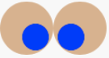

Class summary: Expressions and Building Images
Copyright (c) 2017 Kathi Fisler
This material goes with basic data and expressions, sections 2.1-2.4 and 2.7 from the textbook
A Note on these Notes: These notes give you the general outline of the examples and activities that we did in class sessions. They are not meant to substitute for the textbook, which gives more examples and more details. These notes are not a full transcript of all the points made in class (much of that detail is in the textbook, and lecture captures are provided). Each set of notes (or sometimes individual section) will have a link to the corresponding textbook chapter or sections.
The notes use colored highlighting for different content. Hands-on activities are in pale yellow, answers to (some of) those exercises are in light blue, tips on programming are in green, and core ideas about computer science are in pink.
1 What is a program?
A program (or script) instructs a computer to do something. Usually, that something is a computation that the computer should perform.
2 A Motivating Example
Here’s a collection of images of flags. Imagine that you want to create a business that produces images of flags, and this is a sample of images you might need to create.
What do you notice about the flags?
What do you wonder about the flags or the program that might produce them?
Some things we might have noticed:
Some flags have similar structure, but different colors
Some flags come in different sizes
Some flags have poles
Most of these look pretty simple, but some real flags have complicated figures on them
... and so on
What might these observations tell us about the programs we’ll need to create flag images?
We might want to compute the heights of the stripes from the overall flag dimensions, which means we need to write programs over numbers
We need a way to describe colors to our program
We need a way to create images based on simple shapes of different colors
These are the topics we’ll work through for the rest of class. You’ll use what we learn to create several flags for homework.
3 Numbers
Start simple: compute the sum of 3 and 5.
To ask the computer to do this computation, we need to use a programming language and programming environment: we write our computation in the language, and we run the program in the environment. For the first part of this course, we are using a language called Pyret in an environment called code.pyret.org (CPO).
CPO has two windows: definitions (left) and interactions (right). For now, we’ll work in the interactions window.
The > is called the "prompt" – that’s where we tell CPO to run a program. Let’s tell it to run 3+5
> 3 + 5 |
Not surprisingly, we can do other arithmetic computations
> 2 * 6 |
(Note: * is the sign for multiplication)
What if we try 3 + 4 * 5?
Pyret isn’t sure whether we mean (3 + 4) * 5 or 3 + (4 * 5). So it asks us to include parentheses to make that explicit. Every programming language has a set of rules about how you have to write down programs. Pyret’s rules require parentheses to avoid ambiguity.
What if you want to get beyond basic arithmetic operators? Let’s say we want the minimum of two numbers. I write this as
> num-min(2, 8) |
Why num-? It turns out that "minimum" is a concept that makes sense on data other than numbers; Pyret calls the min operator num-min to avoid ambiguity.
Note that when we run num-min, we get a number in return (as we did for +, *, ...). This means we should be able to use the result of num-min in other computations where a number is expected:
> 5 * num-min(2, 8) |
> (1 + 5) * num-min(2, 8) |
Hopefully you are starting to see a pattern. We can build up more complicated programs from smaller ones, using operations to combine answers from the smaller programs.
Go to http://code.pyret.org and press "start coding". Try to write the programs for each of the following computations:
subtract 3 from 7, then multiply the result by 4
subtract 3 from the multiplication of 7 and 4
the sum of 3 and 5, divided by 2
the max of 5 - 10 and -20
2 divided by the sum of 3 and 5
What if you get a fraction as a response? (try it!) You can type fractions directly (as in 1/3), and you can toggle whether it displays as a fraction or decimal by clicking on the result in the interactions window.
Look at an interaction like
> (3 + 4) * (5 + 1) |
42 |
There are actually several kinds of information in this interaction, and we should give them names :
Expression: a computation that produces an answer (it may be part of another computation)
Value: a computation that can’t be computed further (it is its own answer)
Program: a sequence of computations that you want to run
4 Strings
What if we wanted to write a program that used information other than numbers, such as someone’s name? For names and other text-like data, we use what are called strings. Here are some examples:
"Kathi" |
"Go Bruno!" |
"CSCI0111" |
"Carberry, Josiah" |
What do we notice? Strings can be used for any kind of textual data. They can contain spaces, punctuation, and numbers. For our flags example, we’ll use strings to name colors: "red", "blue", etc.
Note that strings are case-sensitive, meaning that capitalization matters (we’ll see where it matters later this week)
5 Images
We now have two kinds of data: numbers and strings. For flags, we’ll
also need images. Images are different from both numbers and strings
(you can’t describe an entire image with a single number—
Images are "optional", in the sense that some programs use them but many do not (where most programs use numbers and strings). When we want to use a feature that isn’t common to most programs, we have to tell Pyret that we plan to use that feature (these are called "libraries"). For images, we do this by running the following line:
include image |
Here are some sample images:
circle(30, "solid", "red")
circle(30, "outline", "blue")
rectangle(20, 10, "solid", "purple")
What operations might you want to do on images?
rotate them
scale them
flip them
put two of them side by side
change all the red parts to yellow
etc
Many of these are supported in Pyret (the "swap colors" isn’t simple, but the rest are built-in).
5.1 Naming Values and Using the Definitions Window
The expressions that create images involve a bit of typing. It would be nice to have shorthands so we can "name" images and refer to them by their names. This is what the definitions window is for: you can put expressions and programs in the definitions window, then use the "Run" button in CPO to make the definitions available in the interactions window.
Put the following in the definitions window:
include image |
red-circ = circle(30, "solid", "red") |
Hit run, then enter red-circ in the interactions window. You should see the red circle.
Here, we used the form
NAME = EXPRESSION |
to tell Pyret to associate the value of EXPRESSION with NAME. With this definition in place, you can type NAME and Pyret will replace it with the value of EXPRESSION. For example
x = 5 |
x + 4 |
The definitions window also lets you create files of code. Under the Pyret File menu, you’ll find the option to save a file. CPO will save the contents of your definitions window to the Google Drive account associated with how you logged into CPO.
Additional notes on using CPO are provided on the course website.
5.2 Building Images
Part of the fun of images is combining them to create more complex images. Here’s an example.
circ-small = circle(20, "solid", "red") |
|
overlay(circ-small, |
rectangle(40, 60, "solid", "blue")) |
|
overlay( |
overlay(circ-small, |
rectangle(40, 60, "solid", "blue")), |
rotate(45, star(80, "outline", "purple"))) |
This example points out several details about programming:
A file can contain many expressions. In CPO, the value of each expression prints in the interactions window.
Nothing gets printed when we store a value under a name. Parts of code that don’t compute values (like giving the name eye to the corresponding image) are called statements.
If we name a computation, we can reuse it without writing the same expression multiple times
Expressions can combine multiple operations to do a more complex task
Key idea in CS: As you build up more complex images from simpler ones, you are following a core idea called composition. Programs are always built of smaller programs that do parts of the larger task you want to perform. We’ll often use composition in this course.
a blue triangle (you pick the size)
a blue triangle inside a yellow rectangle
a bullseye with 3 nested circles aligned in their centers (the Target logo)
a triangle oriented at an angle
whatever you want —
play around and have fun!
5.3 Practicing Composition
Let’s create an image of a pair of crossed eyes. We’re aiming for an image like the following:

Follow lecture capture or look at the final code file to see how we built this up.
6 Key Takeaways
Programs are formed of expressions and definitions
Expressions compose (or nest) to create larger programs
The structure of data is reflected in the structure of the expressions that create the data